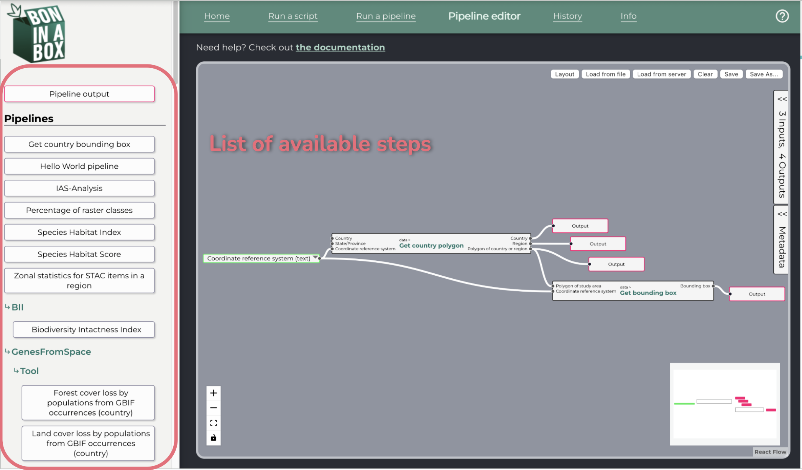
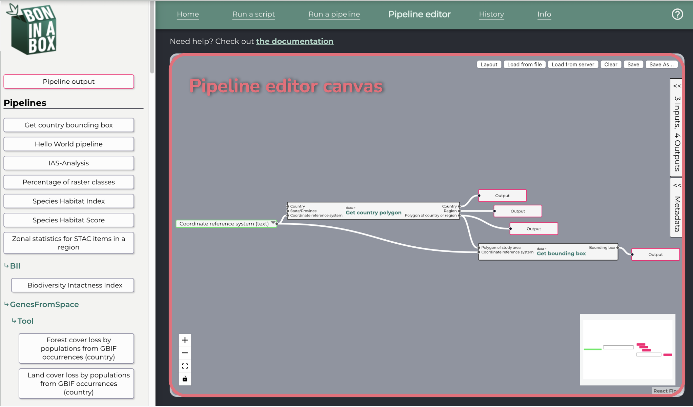
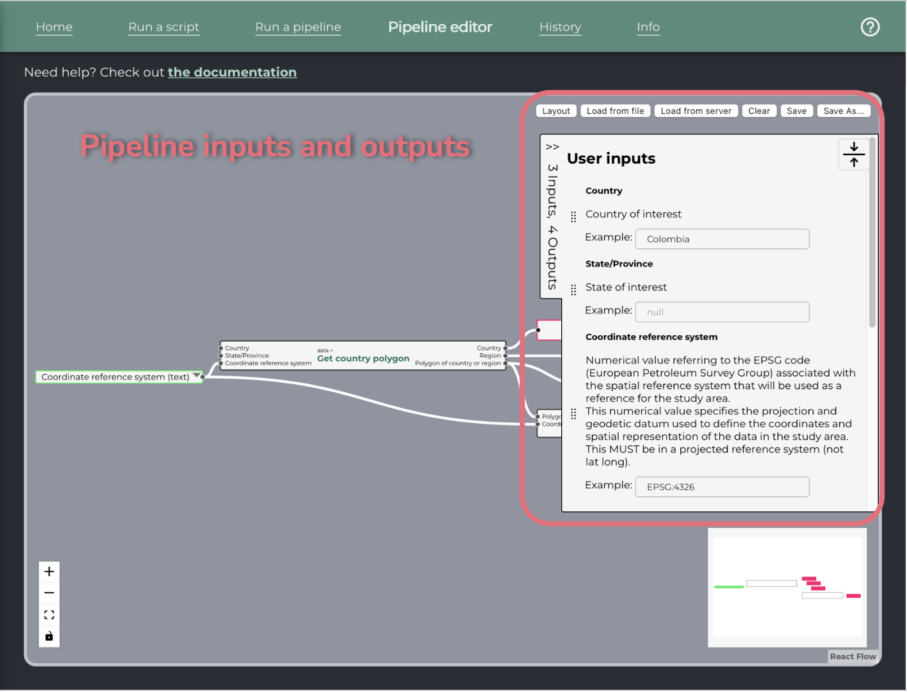
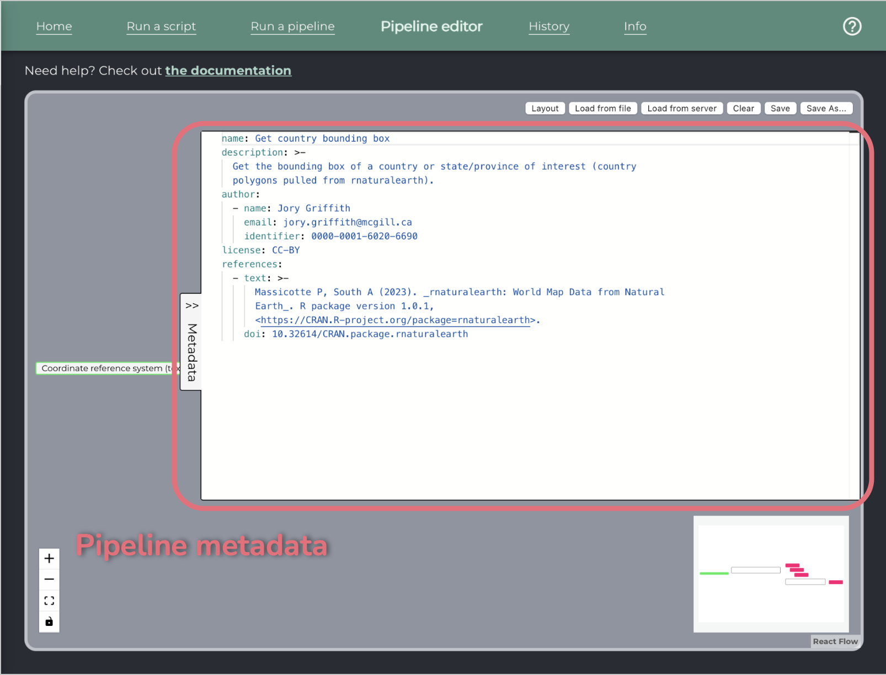
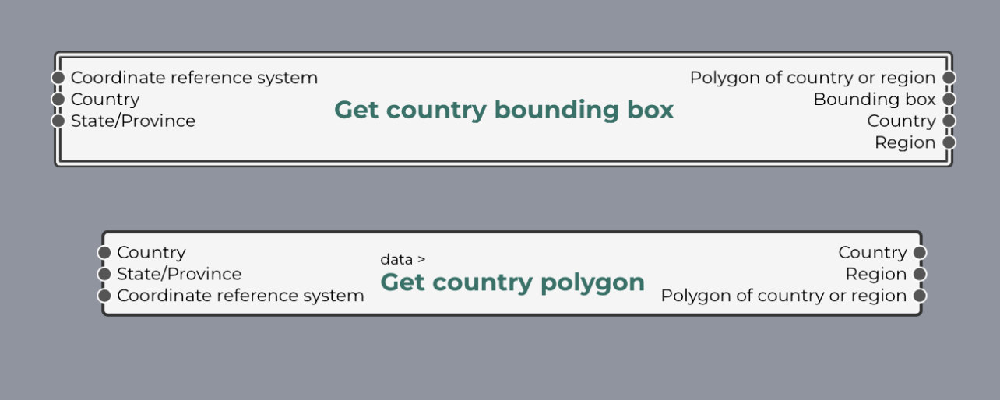
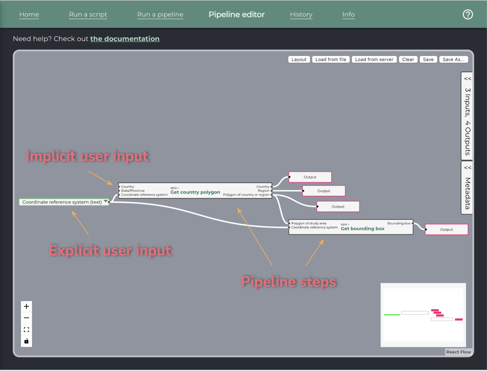

Adapter votre code à un pipeline d’analyse
Ce guide présente étape par étape comment adapter un flux de travail analytique existant ou développer un nouveau pipeline pour le Moteur d’Évaluation de la Biodiversité (BEE).
BEE prend en charge les pipelines développés en R, Python, Julia et dans d’autres langages pris en charge. Les pipelines sont constitués de scripts individuels qui peuvent être reliés afin de créer des flux de travail analytiques reproductibles.
Les instructions ci-dessous vous guideront dans la préparation du code, la définition des entrées et des sorties, la création et les tests du pipeline, ainsi que sa soumission à l’évaluation.
Vous débutez dans les contributions? Nous vous recommandons de lire d’abord la page Contribuer pour un aperçu du processus de contribution, ainsi que les Normes des pipelines pour connaître les exigences scientifiques et techniques.
Avant de commencer
Pour développer et tester des pipelines, vous aurez besoin :
D’un compte GitHub : les contributions sont gérées dans le dépôt des pipelines BON in a Box.
D’une installation locale de BEE : suivez le guide d’installation pour configurer la plateforme sur votre ordinateur.
D’un flux de travail analytique : il peut s’agir d’un script existant ou d’une nouvelle méthode que vous souhaitez développer sous forme de pipeline.
D’un éditeur de code : par exemple Visual Studio Code ou RStudio, pour développer et modifier vos scripts.
Avant de commencer le développement, nous vous recommandons de communiquer avec l’équipe de BON in a Box pour discuter du pipeline proposé et repérer les composants existants qui pourraient être réutilisés.
Flux général de contribution avec GitHub
Les contributeurs suivent le flux GitHub pour proposer des pipelines à BON in a Box. Voici les étapes à suivre :
Assurez-vous de disposer d’un dépôt GitHub personnel ou institutionnel.
Si les développeurs de BON in a Box vous ont donné accès au dépôt, créez une branche pour votre pipeline. Sinon, créez un fork du dépôt bon-in-a-box-pipelines dans votre compte GitHub personnel, puis clonez-le sur votre ordinateur.
Créez une branche pour votre pipeline à partir de la branche principale, en lui donnant un nom descriptif (p. ex. ProtConn_pipeline).
Créez votre pipeline dans cette branche. Assurez-vous qu’il respecte les normes des pipelines.
Une fois le pipeline terminé, créez une pull request (instructions ici) vers la branche principale du dépôt GitHub bon-in-a-box-pipelines. Remplissez le modèle d’évaluation par les pairs qui sera automatiquement inséré dans la pull request et proposez au moins deux évaluateurs potentiels.
Une fois l’évaluation par les pairs terminée, apportez au pipeline les modifications suggérées et soumettez-le à nouveau.
Une fois accepté, le pipeline sera fusionné dans la branche principale et publié sur Zenodo avec un DOI.
L’équipe de BON in a Box communiquera avec vous au sujet des corrections de bogues ou des demandes de fonctionnalités. Les nouvelles versions suivront la structure de versionnage indiquée au bas de la page des normes des pipelines.
Pendant le développement du pipeline, fusionnez régulièrement la branche principale dans votre branche afin d’éviter les conflits lors de la fusion finale.
Tutoriel vidéo : écrire un script
Tutoriel vidéo : créer un pipeline
Quelques étapes suffisent pour adapter des flux de travail analytiques aux pipelines BON in a Box. Une fois BON in a Box installé sur votre ordinateur, vous pouvez modifier et exécuter des pipelines localement en créant des fichiers dans le dossier BON in a Box cloné depuis le dépôt GitHub. Les flux de travail peuvent être écrits dans différents langages, notamment R, Julia et Python; les étapes d’un même pipeline n’ont pas toutes à utiliser le même langage.
Étape 1 : Planifier votre pipeline
Commencez par esquisser la structure de votre pipeline. Divisez le flux de travail en étapes logiques, chacune accomplissant une tâche et pouvant éventuellement être réutilisée dans d’autres pipelines. Réfléchissez aux entrées et aux sorties de chaque script ainsi qu’à la manière de les relier pour former un pipeline complet.
En voici un exemple :

Vérifiez si certaines des étapes dont vous avez besoin sont déjà disponibles dans BON in a Box afin d’éviter de devoir les réécrire.
Étape 2 : Diviser vos scripts
Vous pouvez commencer à rédiger les scripts individuels de votre pipeline. Si vous disposez déjà d’un flux de travail analytique, divisez-le en scripts correspondant aux différentes étapes du pipeline. Déterminez les entrées et les sorties de chaque script.
Étape 3 : Créer un fichier YAML
Chaque script doit être accompagné d’un fichier YAML (extension .yml) qui précise les entrées et les sorties de cette étape du pipeline.
Les descriptions des pipelines, des scripts, des entrées et des sorties acceptent Markdown. Consultez cette référence rapide CommonMark pour connaître la syntaxe permise, qui comprend notamment les caractères spéciaux, les liens et les images.
Nom et description
Les fichiers YAML doivent commencer par le nom et la description du script, ainsi que par la liste de ses auteurs. Le nom doit correspondre à celui du script décrit (script_name.R dans l’exemple ci-dessous). Enregistrez le fichier sous le même nom que le script, mais avec l’extension .yml (p. ex. si le script s’appelle my_script.R, le fichier YAML doit s’appeler my_script.yml).
Exemple :
script: script_name.R
name: Script Name
description: Describe what the script does
author:
- name: John Doe (john.doe@gmail.com)
- name: Jane Doe (jane.doe@gmail.com)Entrées
Le fichier YAML doit ensuite préciser les entrées du script. Il peut s’agir des sorties du script précédent, reliées par des lignes dans l’éditeur de pipeline, ou d’entrées fournies par l’utilisateur dans le formulaire.
Tous les identifiants d’entrée et de sortie doivent respecter la convention snake_case : utilisez uniquement des minuscules et remplacez les espaces par des traits de soulignement. Par exemple, l’étiquette « Species name » correspond à l’identifiant species_name. Cet identifiant sera le nom du paramètre d’entrée dans votre code.
Voici un exemple dans lequel l’utilisateur indique un système de coordonnées de référence et une distance :
inputs:
crs:
label: coordinate reference system for output
description: ESPG coordinate reference system for output
type: text
example: "EPSG:4326"
distance:
label: Distance
description: Some distance measurement (in meters) for a parameter
type: int
example: 1000Si vous indiquez une valeur d’exemple, elle remplira automatiquement l’entrée, à moins que l’utilisateur ne la modifie. Pour laisser le champ vide par défaut, écrivez example: null. Si aucune valeur d’exemple n’est indiquée, une erreur se produira. Le script doit impérativement pouvoir s’exécuter correctement avec les exemples par défaut en cliquant simplement sur Exécuter.
Plusieurs types d’entrées utilisateur peuvent être indiqués dans le fichier YAML :
| Attribut « type » dans le YAML | Affichage dans l’interface | Description | ==================================+============================+===================================================================================+ boolean | Texte brut | true/false | | |
| float or float[] (float array) | Texte brut | Nombres positifs ou négatifs avec décimales; les entiers constituent aussi une entrée valide. |
| int or int[] (int array) | Texte brut | Nombre entier | |
| options1 | Menu déroulant | Sélectionner une option prédéfinie | |
| options[]1 | Menu déroulant à sélection multiple | Sélectionner plusieurs options prédéfinies | |
| text or text[] (text array) | Texte brut | Saisie de texte | |
| (any unknown type) | Texte brut | | |
- Les crochets indiquent un tableau; l’utilisateur peut y saisir plusieurs valeurs séparées par une virgule. C’est utile lorsque l’analyse doit utiliser différents paramètres (p. ex. plusieurs espèces ou bandes raster).
1 Le type options nécessite un attribut options supplémentaire qui énumère les choix disponibles.
options_example:
label: Options example
description: The user has to select between a fixed number of text options. Also called select or enum. The script receives the selected option as text.
type: options
options:
- first option
- second option
- third option
example: third optionLes entrées utilisateur peuvent aussi être des types de fichiers, pour permettre le téléversement d’un fichier ou le raccordement à la sortie d’un script précédent. Vous pouvez indiquer plusieurs types de fichiers :
| Type de fichier | Type MIME à utiliser dans le YAML | Description =============+================================+===========================================================================+ CSV | text/csv | Format de fichier à valeurs séparées par des virgules (.csv) | | |||
| GeoJSON | application/geo+json | Format de fichier GeoJSON (.geojson) | | |
| GeoPackage | application/geopackage+sqlite3 | Format de fichier GeoPackage (.gpkg) | | |
| GeoTIFF2 | image/tiff;application=geotiff | Format de fichier GeoTIFF (.tif) | | |
| Shapefile | application/dbf | Format Shapefile (.shp) | | |
| Texte | text/plain | Sortie en texte brut (aucun format de fichier requis; sortie directe du script) | | |
| TSV | text/tab-separated-values | Format de valeurs séparées par des tabulations (.tsv) | |
Par exemple :
inputs:
landcover_raster:
label: Raster of landcover
description: Landcover data pulled from EarthEnv database with 1x1km resolution
type: application/geo+json
example: null
species_occurences:
label: Occurence points of species
description: Occurence points from GBIF or uploaded by the user
type: text/csv
example: nullLe type d’entrée peut aussi être défini à l’aide d’un nombre limité de mots-clés qui génèrent automatiquement des sélecteurs normalisés adaptés à ce type. Par exemple, le type country crée un menu déroulant contenant une liste normalisée de pays provenant de GeoNames. Le type crsBbox permet à l’utilisateur de définir une boîte englobante en choisissant un pays ou en cliquant sur une carte. Voici la liste des sélecteurs actuellement disponibles :
Nom de l’entréecountry |
Description | | ============================================================================================================================================================================================================================================================================+===========+ Crée un sélecteur (menu déroulant) contenant une liste normalisée de pays. GeoNames sert de référence pour cette liste. | | | ||
| countryRegion | Crée un sélecteur (menu déroulant) contenant une liste normalisée des régions (provinces, États, etc.) d’un pays sélectionné. GeoNames sert de référence pour cette liste. | ||
| countryRegionCRS | Crée un sélecteur (menu déroulant) permettant de choisir un système de coordonnées de référence adapté à un pays ou à une région en particulier. | | | ||
| CRS | Crée un sélecteur permettant de définir un système de coordonnées de référence. | ||
| crsBbox | Crée un bouton qui ouvre une interface permettant de définir une boîte englobante (limites géographiques minimales et maximales) à partir d’une sélection facultative de pays/région et d’un CRS, ou en cliquant sur la carte pour délimiter la zone d’intérêt de l’analyse. | | | ||
| location | Objet de localisation complet. Crée un bouton qui ouvre une interface permettant de définir un pays, une région, un système de coordonnées de référence et une boîte englobante (limites géographiques minimales et maximales). | | | ||
| stac_asset[] | Crée un bouton qui ouvre un navigateur de catalogues STAC où l’utilisateur choisit des ressources (p. ex. des couches GeoTIFF optimisées pour le nuage) dans une ou plusieurs collections. Le script reçoit une liste de sélections. Voir Ressources STAC. | | | | | |||
L’utilisation de ces sélecteurs crée des objets comprenant plusieurs éléments. Par exemple, le sélecteur country crée un objet d’entrée qui contient le nom anglais du pays, ses codes ISO3 et ISO2 ainsi que sa boîte englobante en longitude et latitude. Consultez ici la liste complète des clés de chaque sélecteur.
Sorties
Après avoir défini les entrées, vous pouvez indiquer les fichiers que le script doit produire. Il peut s’agir de sorties finales du pipeline, de sorties de cette étape destinées à être reliées à une autre étape, ou des deux.
Plusieurs types de sorties peuvent être créés :
| Type de fichier | Type MIME à utiliser dans le YAML | Affichage dans l’interface ===============+================================+==============================+ CSV | text/csv | Tableau HTML (contenu partiel) | | |||
| GeoJSON2 | application/geo+json | Carte | |
| GeoPackage | application/geopackage+sqlite3 | Lien | |
| GeoTIFF3 | image/tiff;application=geotiff | Carte interactive (Leaflet) | |
| HTML | text/html | Ouvrir dans un nouvel onglet | |
| JPG | image/jpg | Étiquette | |
| Shapefile | application/dbf | Lien | |
| Texte | text/plain | Texte brut | |
| TSV | text/tab-separated-values | Tableau HTML (contenu partiel) | | |
| (tout type inconnu) | Texte brut ou lien | | |||
2 Les coordonnées GeoJSON doivent être en WGS 84. Pour en savoir plus, consultez la section 4 de la spécification.
3 Lorsqu’il est utilisé comme sortie, le type image/tiff;application=geotiff accepte un attribut supplémentaire range, qui précise les valeurs minimale et maximale du TIFF. Ces valeurs servent à l’affichage.
map:
label: My map
description: Some map that shows something
type: image/tiff;application=geotiff
range: [0.1, 254]
example: https://example.com/mytiff.tifVoici un exemple de sortie :
outputs:
result:
label: Analysis result
description: The result of the analysis, in CSV form
type: text/csv
result_plot:
label: Result plot
description: Plot of results
type: image/pngDéfinir les dépendances des paquets R et Python avec Conda
« Conda fournit la gestion des paquets, des dépendances et des environnements pour tous les langages. » Si un script dépend d’une version précise d’un paquet, Conda chargera cette version pour éviter les ruptures de compatibilité lors des mises à jour. BON in a Box utilise un environnement Conda central comprenant les bibliothèques courantes et prend en charge des environnements dédiés pour les scripts qui en ont besoin.
Ainsi, les paquets ne sont pas installés pendant l’exécution des scripts : ils le sont dans l’environnement Conda de R. Vous devez tout de même les charger dans vos scripts à l’aide de la commande library() en R ou import en Python.
Vérifier si les bibliothèques nécessaires sont dans Conda
Pour vérifier si les paquets nécessaires se trouvent déjà dans l’environnement Conda par défaut, consultez runners/conda/r-environment.yml ou runners/conda/python-environment.yml dans le dossier du projet BON in a Box. La liste des paquets déjà installés figure sous dependencies.
Si tous les paquets nécessaires figurent dans le fichier d’environnement R et que vous n’avez pas besoin de versions particulières, vous n’avez pas à définir de sous-environnement Conda et pouvez passer à l’étape suivante.
Définir un sous-environnement Conda dans votre fichier YAML
Si vous ajoutez une section Conda, veillez à y répertorier toutes les dépendances. Un environnement Conda indiqué dans le fichier YAML crée un nouvel environnement distinct; il ne complète pas l’environnement de base. Vous devez donc y préciser tous les paquets nécessaires au script, même s’ils figurent déjà dans r-environment.yml.
Recherchez vos paquets sur Anaconda. Les paquets qui s’y trouvent sont reconnus par Conda et peuvent être ajoutés au sous-environnement Conda du fichier YAML. Si un paquet n’y est pas disponible, consultez la section ci-dessous.
Chaque sous-environnement Conda et chaque script R doit charger rjson, qui est nécessaire à l’exécution des pipelines BON in a Box.
Exemple de sous-environnement Conda pour un script R :
conda: # Optional: if you script requires specific versions of packages.
channels:
- conda-forge # make sure to put conda forge first
# - r # use this chanel only if some packages are not available in conda-forge
dependencies:
- r-rjson # read inputs and save outputs for R scripts
- r-terra
- r-ggplot2
- r-rredlist=1.0.0 # package=versionExemple de sous-environnement Conda pour un script Python. Lors de la définition d’un environnement Conda pour Python, n’ajoutez rien après conda-forge ni avant les noms des paquets.
conda:
channels:
- conda-forge
dependencies:
- openeo
- pandasLa gestion des dépendances Conda n’est pas disponible en Julia. Un projet central se trouve dans /julia_depot/. Pour installer des paquets, utilisez biab_ensure_package(["Pkg1", "Pkg2"]) au début de votre script; cette fonction bloque les scripts concurrents pendant l’installation. Les paquets ajoutés de cette manière ne sont pas épinglés à une version et sont partagés par tous les scripts qui utilisent le projet central.
Pour isoler les dépendances et assurer leur reproductibilité, placez un fichier Project.toml et son fichier Manifest.toml dans le même dossier que votre script. Celui-ci s’exécutera alors dans son propre environnement, créé à partir de ces fichiers. Vous pouvez les générer en exécutant le script une fois, puis en copiant les fichiers Project.toml et Manifest.toml qui se trouvent dans son dossier de sortie.
Pour en savoir plus, consultez la documentation de Conda.
Charger des paquets qui ne sont pas disponibles dans Conda
Si vous avez besoin d’un paquet qui n’est pas disponible dans Conda, par exemple un paquet téléchargé depuis GitHub, installez-le directement dans le script. Ne l’ajoutez pas à la section Conda du fichier YAML, car Conda ne pourra pas le reconnaître.
En R, l’installation simultanée de paquets peut poser problème (par exemple, lorsque le même script est exécuté plusieurs fois en parallèle). Pour ce langage uniquement, vous devez utiliser la fonction `biab_ensure_package(…)`, qui surveille le mécanisme de verrouillage de R et suspend les scripts concurrents pendant l’installation. Voici un exemple d’utilisation :
biab_ensure_package(
"duckdbfs",
version = "0.1.2",
installer = function() {
remotes::install_version("duckdbfs", version = "0.1.2", dependencies = FALSE, upgrade = "never")
}
)
biab_ensure_package(
"duckspatial",
version = "0.9.0",
installer = function() {
remotes::install_github("Cidree/duckspatial@v0.9.0", dependencies = FALSE, upgrade = "never")
}
)
library(duckdbfs)
library(duckspatial)Exemples
Exemple complet de fichier YAML :
script: script_name.R
name: Script Name
description: Describe what the script does
author:
- name: John Doe
email: john.doe@example.com
- name: Jane Doe
email: jane.doe@example.com
identifier: https://orcid.org/0000-0000-0000-0000
role: Software, Visualization, Conceptualization
reviewer:
- name: John Smith
email: john.smith@example.com
- name: Jane Smith
email: jane.smith@example.com
identifier: https://orcid.org/0000-0000-0000-0000
inputs:
landcover_raster:
label: Raster of landcover
description: Landcover data pulled from EarthEnv database with 1x1km resolution
type: application/geo+json
crs:
label: coordinate reference system for output
description: ESPG coordinate reference system for output
type: int
example: 4326
unit_distance:
label: unit for distance measurement
description: String value of
type: options
options:
- "m2"
- "km2"
outputs:
result:
label: Analysis result
description: The result of the analysis, in CSV form
type: text/csv
result_plot:
label: Result plot
description: Plot of results
type: image/png
conda: # Optional, only needed if you need packages not in the central environment
channels:
- conda-forge
- r
dependencies:
- r-rjson=0.2.22 #package=version
- r-rredlist
- r-ggplot2
- r-sf
- r-terra
compute: # Optional, specify compute requirements for kubernetes or HPC clusters. If absent, default values apply.
hpc: false # Optional, send to a HPC cluster if available. Defaults to false.
mem: 4Gi # Cap for the memory usage, default 4Gi.
mem-max: 64Gi # Optional, if the job fails with OOM, the job's available memory will be increased up to this value.
cpus-per-task: 4 # Number of CPU allocated, default 4.
time: "02:00:00" # Only when "hpc: true", maximum time allowed before the job is interrupted.YAML est un format sensible aux espaces; vérifiez donc que les indentations du fichier sont correctes.
Si les entrées proviennent des sorties d’une étape précédente du pipeline, donnez-leur le même nom afin qu’elles soient automatiquement reliées.
Modèle commenté vierge à remplir :
script: # script file with extension, such as "myScript.R".
name: # short name, such as My Script
description: # Targeted to those who will interpret pipeline results and edit pipelines.
author: # 1 to many
- name: # Full name
email: # Optional, email address of the author. This will be publicly available
identifier: # Optional, full URL of a unique digital identifier, such as an ORCID.
role: # Optional, string with roles undertaken by the author in their contribution. We recommend to use CRediT roles (https://credit.niso.org/).
license: # Optional. If unspecified, the project's MIT license will apply.
external_link: # Optional, link to a separate project, GitHub repo, etc.
timeout: # Optional, in minutes. By defaults scripts time out after 24h to avoid hung process to consume resources. It can be made longer for heavy processes.
inputs: # 0 to many
key: # replace the word "key" by a snake case identifier for this input
label: # Human-readable version of the name that will show up in UI
description: # Targeted to those who will interpret pipeline results and edit pipelines.
type: # see below
example: # will also be used as default value, can be null
outputs: # 1 to many
key:
label:
description:
type:
example: # optional, for documentation purpose only
references: # 0 to many
- text: # plain text reference
link: # full link to the resource (ex. https://doi.org/...)
conda: # Optional, only needed if your script has specific package dependencies
channels: # programs that you need
- # list here
dependencies: # any packages that are dependent on a specfic version
- # list here
compute: # Optional, specify compute requirements for kubernetes or HPC clusters. If absent, default values apply.
hpc: false # Optional, send to a HPC cluster if available. Defaults to false.
mem: 4Gi # Hard cap for the memory usage, default 4Gi.
cpus-per-task: 4 # Number of CPU allocated, default 4.
time: "02:00:00" # Only when "hpc: true", maximum time allowed before the job is interrupted.Consultez cet exemple.
Étape 4 : Intégrer les entrées et les sorties YAML à votre script
Maintenant que le fichier YAML est créé, les entrées et les sorties doivent être intégrées à vos scripts.
Les scripts exécutent les opérations en arrière-plan. Ils se trouvent dans le dossier /scripts.
Les versions actuellement prises en charge de R, Julia, Python et shell sont indiquées dans l’onglet d’information sur le serveur de l’interface utilisateur.
Cycle de vie d’un script :
Le script est lancé avec le dossier de sortie comme paramètre (en R, il s’agit de la variable
outputFolderde la session R; en Julia, Shell et Python, le dossier de sortie est transmis comme argument).Le script lit
input.jsonpour obtenir les paramètres d’exécution (p. ex. l’espèce, la zone, la source des données).Le script effectue sa tâche.
Le script génère
output.json, qui contient des liens vers les fichiers de résultats ou des valeurs natives (p. ex. un nombre ou une chaîne de caractères).
Consultez le script R vide pour voir un exemple minimal du cycle de vie d’un script.
Recevoir les entrées
Lors de l’exécution d’un script, un dossier est créé pour chaque ensemble de paramètres. Un même ensemble de paramètres mène au même dossier; un ensemble différent crée un dossier distinct. Les entrées du script sont enregistrées dans un fichier input.json généré dans ce dossier d’exécution unique.
Ce fichier associe les valeurs de cette exécution aux identifiants des paramètres indiqués dans la description YAML du script. Exemple :
{
"fc": ["L", "LQ", "LQH"],
"method_select_params": "AUC",
"n_folds": 2,
"orientation_block": "lat_lon",
"partition_type": "block",
"predictors": [
"/output/data/loadFromStac/6af2ccfcd4b0ffe243ff01e3b7eccdc3/bio1_75548ca61981-01-01.tif",
"/output/data/loadFromStac/6af2ccfcd4b0ffe243ff01e3b7eccdc3/bio2_7333b3d111981-01-01.tif"
],
"presence_background": "/output/SDM/setupDataSdm/edb9492031df9e063a5ec5c325bacdb1/presence_background.tsv",
"proj": "EPSG:6622",
"rm": [0.5, 1.0, 2.0]
}Le script lit le fichier input.json qui se trouve dans son dossier d’exécution. Ce fichier JSON est créé automatiquement par le pipeline BON in a Box.
En R, la fonction utilitaire biab_inputs est chargée par défaut pour lire le fichier et le convertir en liste. Voici comment lire le fichier d’entrée dans un script R :
input <- biab_inputs()Il faut ensuite préciser ces entrées dans les fonctions qui les utilisent.
Les entrées sont référencées par input$input_name.
Par exemple, pour calculer la racine carrée d’un nombre saisi par l’utilisateur dans l’interface :
result <- sqrt(input$number)Si l’utilisateur saisit le nombre 144, la fonction renverra donc 12.
Voici un autre exemple de lecture d’une sortie au format CSV produite par une étape précédente du pipeline :
dat <- read.csv(input$csv_file)Le nom de l’entrée indiqué dans le script doit correspondre à celui du fichier YAML. Par exemple, pour charger le raster de couverture terrestre présenté plus haut, écrivez :
landcover <- rast(input$landcover_raster)Pour le reprojeter en utilisant le CRS indiqué par l’utilisateur :
landcover_projected <- project(landcover, input$crs)Lorsque les entrées sont fournies à l’aide de sélecteurs prédéfinis, les valeurs associées aux options choisies sont accessibles sous forme de liste; elles sont décrites ici. Par exemple, pour accéder à la boîte englobante d’un sélecteur nommé study_area_bbox de type crsBbox, utilisez :
bbox <- input$study_area_bbox$bboxPour obtenir l’identifiant du système de coordonnées de référence de la boîte englobante, composé de l’autorité et du code :
crs_id <- paste0(input$study_area_bbox$CRS$authority,input$study_area_bbox$CRS$code)En Python, la fonction utilitaire biab_inputs est chargée par défaut pour lire le fichier et le convertir en liste. Voici comment lire le fichier d’entrée dans le script et utiliser sa valeur :
data = biab_inputs()
my_int = data['some_int_input']
# do something with my_intPour accéder aux valeurs des sélecteurs en Python, la méthode est semblable à celle de R. Par exemple, pour créer l’identifiant CRS à partir de l’autorité et du code :
crs_id = data['study_area_bbox']['CRS']['authority']+':'+str(data['study_area_bbox']['CRS']['code'])Le code suivant permet de lire les entrées du fichier JSON dans une variable d’un script Julia :
using JSON
# Read the inputs from input.json
input_data = open("input.json", "r") do f
JSON.parse(f)
end
number = input_data["number"]
# do something with numberPour accéder aux valeurs des sélecteurs en Julia, la méthode est semblable à celle utilisée en R ou en Python. Par exemple, pour créer l’identifiant CRS à partir de l’autorité et du code :
crs_id = string(input_data["study_area_bbox"]["CRS"]["authority"],":",input_data["study_area_bbox"]["CRS"]["code"])Écrire les sorties
Les sorties peuvent être enregistrées dans différents formats de fichiers ou sous forme de valeurs primitives (int, text, etc.). Le format doit être indiqué correctement dans le fichier YAML. Si votre script produit de nombreuses sorties, il est recommandé d’appeler biab_output(...) tout au long du script plutôt qu’uniquement à la fin : en cas d’échec, les résultats déjà produits peuvent aider à comprendre ce qui s’est passé.
Une variable nommée outputFolder est chargée automatiquement et contient le chemin du dossier de sortie.
En R, la fonction utilitaire biab_output permet d’enregistrer les sorties. Voici un exemple avec un fichier CSV et un graphique au format PNG.
result_path <- file.path(outputFolder, "result.csv")
write.csv(result, result_path, row.names = F )
biab_output("result", result_path)
result_plot_path <- file.path(outputFolder, "result_plot.png")
ggsave(result_path, result)
biab_output("result_plot", result_plot_path)Une variable nommée output_folder est chargée automatiquement et contient le chemin du dossier de sortie.
La fonction utilitaire biab_output permet d’enregistrer les sorties dès qu’elles sont créées au cours du script.
intOutput = 12345
biab_output("my_int_output", intOutput)Une variable nommée output_folder est chargée avant l’exécution du script. Elle contient le chemin du dossier de sortie sous forme de chaîne de caractères.
La fonction utilitaire biab_output permet d’enregistrer les sorties dès qu’elles sont créées au cours du script.
# Write the output file to disk
my_output_path=joinpath(output_folder, "someOutput.csv")
open(my_output_path, "w") do f
write(f, #= ... =#)
end
# Add it to the BON in a Box outputs for this script
biab_output("my_output", my_output_path)Modifier votre script
Il n’est pas nécessaire de redémarrer les serveurs lorsque vous modifiez des scripts dans le dossier /scripts :
Pour modifier un script existant, enregistrez le fichier, puis relancez le script dans l’interface pour exécuter la nouvelle version.
Lorsque vous ajoutez ou renommez des scripts, actualisez la page du navigateur.
Si des fichiers supplémentaires ou des dépendances externes de vos scripts ont été modifiés, ces changements ne seront pas détectés automatiquement. Dans ce cas, enregistrez de nouveau le fichier de script principal — celui qui est référencé dans le fichier
.yml— afin de déclencher une nouvelle exécution lors des prochains lancements (la date d’enregistrement du script sert à déclencher les nouvelles exécutions).
Il n’est pas non plus nécessaire de redémarrer les serveurs lorsque vous modifiez des pipelines dans le dossier /pipelines :
Dans l’éditeur de pipeline, cliquez sur Enregistrer, puis relancez le pipeline depuis la page d’exécution des pipelines.
Lorsque vous ajoutez ou renommez des pipelines, actualisez la page du navigateur.
Validation des scripts
La syntaxe et la structure du fichier descriptif du script sont validées lors d’un push. Pour lancer la validation localement, exécutez validate.sh dans votre terminal.
Cette validation vérifie la syntaxe et la structure, mais pas l’exactitude du contenu. L’évaluation par les pairs des scripts et des fichiers descriptifs est donc obligatoire avant l’acceptation d’une pull request. Les pipelines acceptés reçoivent l’une des étiquettes suivantes : en développement, en évaluation, évalué ou obsolète; un message facultatif peut expliquer le statut attribué. Les scripts qui ne sont pas destinés à des cas d’utilisation réels reçoivent l’étiquette « exemples ».
Signaler les problèmes
Les clés de sortie info, warning et error permettent de signaler des problèmes pendant l’exécution d’un script. Il n’est pas nécessaire de les décrire dans la section outputs du fichier descriptif. Elles s’affichent dans l’interface avec une mise en forme particulière; vous pouvez utiliser Markdown pour mettre le texte en évidence ou créer des liens vers des ressources de débogage.
Tout message error interrompt également le script et le reste du pipeline. Il est recommandé de produire des messages d’erreur précis pour éviter les plantages lorsque les erreurs peuvent être anticipées. Utilisez pour cela la fonction utilitaire biab_error_stop ou écrivez un attribut error dans le fichier output.json.
Par exemple, si l’analyse doit s’arrêter lorsque le résultat est inférieur à 0 :
# R helper function for errors
# stop if result is less than 0
if (result < 0){
biab_error_stop("Analysis was halted because result is less than 0.")
# Script stops here
}
# Other reporting functions
biab_warning("This warning will appear in the UI, but does not stop the pipeline.")
biab_info("This message will appear in the UI.")if result < 0 :
biab_error_stop("Analysis was halted because result is less than 0.")
# Script stops here
# Other reporting functions
biab_warning("This warning will appear in the UI, but does not stop the pipeline.")
biab_info("This message will appear in the UI.")# Sanitize the inputs
if result < 0
biab_error_stop("Analysis was halted because result is less than 0.")
# Script stops here
end
# Other reporting functions
biab_warning("This warning will appear in the UI, but does not stop the pipeline.")
biab_info("This message will appear in the UI.")Le message personnalisé apparaîtra alors dans l’interface.
Un plantage se comporte comme une sortie error : le pipeline s’arrête et l’erreur s’affiche dans l’interface. Si un script se termine sans créer le fichier output.json, il est considéré comme ayant planté et un message d’erreur général est affiché. Dans les deux cas, vous pouvez consulter les journaux pour obtenir plus de détails.
Étape 5 : Tester votre script
Pour commencer les tests :
- Connectez-vous au serveur en exécutant
./server-up.shdans un terminal Linux (p. ex. Git Bash ou WSL sous Windows, ou Terminal sur Mac). Assurez-vous d’être dans le dossier bon-in-a-box-pipeline de votre ordinateur. - Dans un navigateur Web, saisissez http://localhost/.
Vous pouvez tester votre script dans l’onglet « Exécuter un script » de l’outil. Un formulaire vous permettra de saisir des exemples d’entrées ou d’utiliser les paramètres par défaut pour exécuter le script à des fins de débogage.
Étape 6 : Relier vos scripts dans l’éditeur de pipeline BON in a Box
Créez ensuite votre pipeline dans l’éditeur BON in a Box en reliant ses entrées et ses sorties.
Une fois vos scripts et vos fichiers YAML enregistrés localement dans le dossier des pipelines BON in a Box cloné depuis GitHub, ils apparaîtront dans l’éditeur de pipeline. Vous pourrez alors les y faire glisser et relier leurs entrées et sorties pour créer votre pipeline.
Un pipeline est un ensemble d’étapes reliées pour automatiser un flux de travail analytique. Chaque script constitue une étape du pipeline.
Les pipelines ont également des entrées et des sorties. Pour pouvoir être exécuté, un pipeline doit définir au moins une sortie.
Pour une description générale des pipelines en génie logiciel, consultez Wikipédia.
Éditeur de pipeline
L’éditeur de pipeline permet de créer des pipelines en reliant des scripts individuels par leurs entrées et leurs sorties.
Le panneau de gauche présente les étapes disponibles, que vous pouvez faire glisser sur le canevas de l’éditeur de pipeline.


À droite, un panneau dépliable permet de modifier les étiquettes et les descriptions des entrées et sorties du pipeline.

Sous ce panneau se trouve celui où saisir les métadonnées du pipeline.

Pour ajouter une étape : faites-la glisser du panneau de gauche vers le canevas. Les étapes correspondant à un script unique sont entourées d’une bordure simple; celles correspondant à des pipelines ont une bordure double.

Pour relier des étapes : faites glisser un connecteur de sortie vers un connecteur d’entrée. Les connecteurs d’entrée se trouvent à gauche et ceux de sortie à droite.
Pour ajouter une valeur constante : double-cliquez sur une entrée pour lui associer une valeur constante. Le champ est prérempli avec la valeur d’exemple.
Pour ajouter une sortie : double-cliquez sur la sortie d’une étape pour lui associer une sortie de pipeline, ou faites glisser le carré rouge du panneau de gauche et reliez-le manuellement.
Pour supprimer une étape ou un connecteur : sélectionnez-le et appuyez sur la touche Suppr du clavier.
Pour créer un tableau à partir de sorties individuelles : si plusieurs sorties du même type sont reliées à une même entrée, le script les recevra sous forme de tableau.

Une valeur individuelle peut également être combinée à un tableau du même type pour produire un tableau unique.

Entrées utilisateur : pour fournir des entrées au moment de l’exécution, laissez-les simplement déconnectées dans l’éditeur de pipeline. Elles seront ajoutées au fichier d’entrées d’exemple lors de l’exécution du pipeline.
Si une entrée est commune à plusieurs étapes, vous pouvez ajouter un nœud d’entrée utilisateur spécial pour éviter de la répéter. Commencez par relier vos nœuds à une constante.

Utilisez ensuite la flèche vers le bas pour ouvrir le menu du nœud, puis choisissez « Convert to user input ».

Le nœud changera comme illustré ci-dessous et ses détails apparaîtront dans le panneau de droite, avec les autres entrées utilisateur.

Conversions de types d’entrée
Dans la plupart des cas, une sortie ne peut être reliée qu’à une entrée de même type. Si vous reliez une sortie de type text/csv à une entrée de type float, le système affichera donc une erreur lors de l’enregistrement du pipeline. Certaines conversions de types sont toutefois permises :
| =============== # Type source | =======================+=============================================================================================================================================+ # Type cible | # Exemple | |
|
| Tout type | Un tableau de ce type | Si un tableau de GeoTIFF est attendu, un seul GeoTIFF est automatiquement converti en tableau à un élément. | | | | layer.tiff becomes [layer.tiff] | |
|
| int | float | Une distance tampon en kilomètres, reçue comme un int par un script et un float par un autre, peut partager la même entrée utilisateur. 1 devient 1.0. |
| options | text | Un script qui reçoit sous forme de chaîne un lien vers une collection géospatiale STAC peut être limité à quelques options choisies au niveau du pipeline. | |
Les objets des sélecteurs suivent une règle distincte : une entrée accepte la sortie d’un autre type de sélecteur si celle-ci contient tous les champs nécessaires. Par exemple, une sortie location peut alimenter une entrée country. Une entrée stac_asset[] n’accepte que des sélections STAC : une sortie stac_asset[] ou une sortie unique stac_asset convertie en liste.
Entrées et sorties du pipeline
Toute entrée sans valeur constante sera considérée comme une entrée du pipeline que l’utilisateur devra renseigner.

Ajoutez un nœud output relié à la sortie d’une étape pour déclarer cette dernière comme sortie du pipeline. Toutes les autres sorties d’étapes non marquées resteront accessibles dans l’interface comme résultats intermédiaires.

Les entrées et sorties du pipeline apparaissent ensuite dans un panneau dépliable à droite du canevas, où leurs descriptions et leurs étiquettes peuvent être modifiées.
Après les modifications, veillez à enregistrer votre travail avant de quitter la page.
Enregistrer et charger
À moins que l’hôte ne l’ait explicitement désactivée, l’interface permet d’enregistrer et de charger des pipelines sur le serveur à l’aide des boutons « Load from server » et « Save ».
Étape 7 : Exécuter le pipeline et résoudre les problèmes
La dernière étape consiste à charger le pipeline enregistré dans BON in a Box et à l’exécuter dans l’onglet « Exécuter un pipeline ».
Votre pipeline devrait générer un formulaire. Remplissez-le, puis cliquez sur Exécuter.

Vous pouvez consulter le journal de chacun de vos scripts pour repérer les erreurs et déboguer.

Lorsque vous modifiez le code d’un script et l’enregistrez sur votre ordinateur, ces changements sont appliqués dès que vous exécutez le script dans BON in a Box. Toutefois, si vous modifiez le fichier YAML, vous devez recharger la page de l’éditeur de pipeline pour voir les changements. Si cela ne fonctionne pas, supprimez le script du pipeline, puis faites-le glisser de nouveau dans l’éditeur. Vous pouvez également modifier directement les entrées et les sorties dans l’éditeur de pipeline.
Dépannage
Voici quelques problèmes courants rencontrés lors de l’exécution de pipelines dans BON in a Box et leurs solutions.
L’éditeur de pipeline affiche un avertissement lors de l’enregistrement
Les erreurs d’enregistrement sont généralement dues à des entrées et sorties incompatibles. Les changements apportés aux entrées ou sorties dans le fichier YAML descriptif d’un script ne sont pas automatiquement répercutés dans l’éditeur de pipeline. Après avoir ajouté des entrées, rechargez l’éditeur pour actualiser les changements. Si vous modifiez le format des fichiers d’entrée ou de sortie, supprimez le script du pipeline et faites-le glisser de nouveau dans l’éditeur pour pouvoir enregistrer le pipeline. Notez qu’un pipeline enregistré avec une erreur ne peut pas être exécuté.
Le script ne trouve pas vos paquets
Assurez-vous que tous les paquets disponibles sur anaconda.org figurent dans le sous-environnement Conda du fichier YAML descriptif du script. Si un paquet n’est pas disponible sur Anaconda, installez-le à l’aide du mécanisme habituel de votre langage de programmation.
« Le script n’a produit aucun résultat. »
a. Vérifiez les erreurs dans le journal : le script a peut-être planté sans laisser de message d’erreur que BON in a Box pourrait afficher. Si vous développez le script, il est recommandé de détecter les conditions préalables au plantage et d’appeler
biab_error_stopavant qu’il ne survienne.b. Assurez-vous que le script appelle
biab_output: BON in a Box affiche uniquement les sorties indiquées au moyen de cette fonction pendant l’exécution du script. Chaque sortie doit également être définie dans le fichier YAML descriptif du script.c. Surveillez l’utilisation de la mémoire lors de la prochaine exécution; consultez la section ci-dessous.
Mémoire vive insuffisante (RAM)
BON in a Box utilise à lui seul environ 1 Go de mémoire. Les scripts en utilisent davantage selon l’analyse exécutée. En général, les grands jeux de données ou les vastes régions nécessitent plus de mémoire; cette relation peut être linéaire ou exponentielle selon l’analyse.
Les systèmes d’exploitation offrent des outils de surveillance de la mémoire. Utilisez le Gestionnaire des tâches sous Windows, le Moniteur d’activité sur Mac ou
htop(ou un outil similaire) sous Linux.
Si vous rencontrez d’autres erreurs, communiquez avec nous sur Discourse ou écrivez-nous à boninabox@geobon.org.
Quand votre pipeline est-il terminé?
Le pipeline est généralisable (il peut, par exemple, être utilisé avec d’autres espèces ou dans d’autres régions).
Le pipeline respecte toutes les normes des exigences de contrôle de la qualité.
Chaque étape est documentée : entrées, sorties, références, etc. La documentation doit être compréhensible pour un biologiste généraliste, et pas seulement pour un spécialiste du pipeline.
Chaque étape vérifie la validité de ses entrées et l’exactitude de ses sorties. Si une anomalie est détectée, elle doit renvoyer une erreur pour interrompre le pipeline, ou un avertissement pour le laisser continuer tout en alertant l’utilisateur.
Les GitHub Actions réussissent.
Vous avez créé un tutoriel accompagnant votre pipeline en suivant ce modèle.